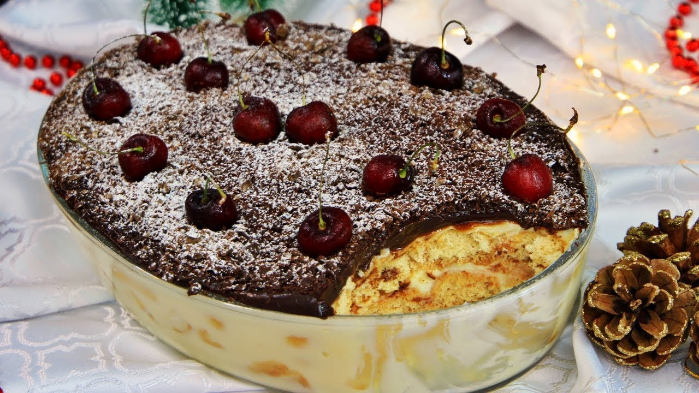

Pave

Ingredients
-
1 lata de creme de leite
-
1 lata de leite (a mesma medida da lata)
-
2 latas de leite condensado
-
2 gemas
-
2 colheres de amido de milho
-
3 colheres de chocolate em pó ou achocolatado
-
Biscoito amido de milho
-
Leite para molhar os biscoitos
-
Raspas de chocolate (opcional)
-
Manteiga sem sal ou margarina só para dar o ponto
Modo de preparo
-
Primeiro pegue a lata de leite condensado, as gemas, a maisena e o leite
-
Coloque no fogo e deixe até que fique um creme
-
Reserve
-
Coloque a segunda lata de leite condensado com um pouco de margarina e o chocolate
-
Deixe no fogo até ficar um creme tipo brigadeiro
-
Desligue o fogo e junte com o creme de leite
-
para montar, coloque primeiro o creme branco
-
Em seguida, mergulhe os biscoitos no leite e coloque sobre o creme branco
-
Depois, coloque o creme preto e acrescente as raspas de chocolate sobre ele
-
Deixe no congelador durante 2 horas